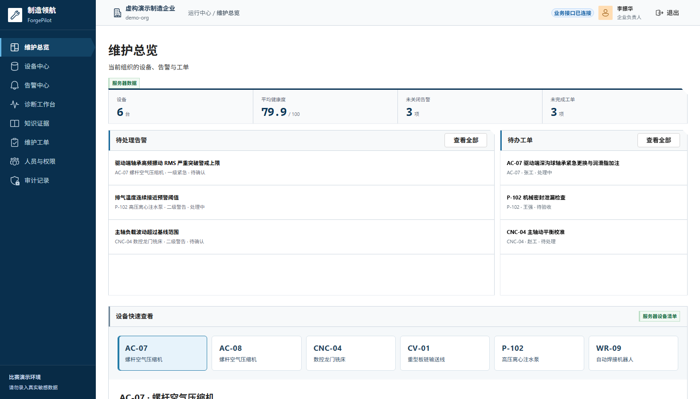
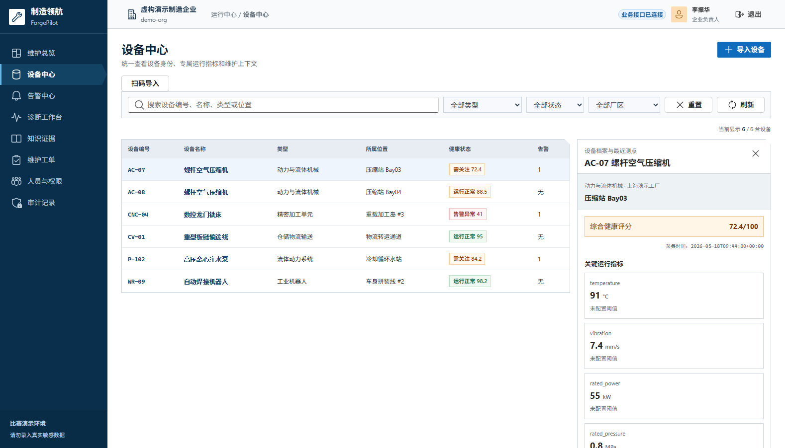
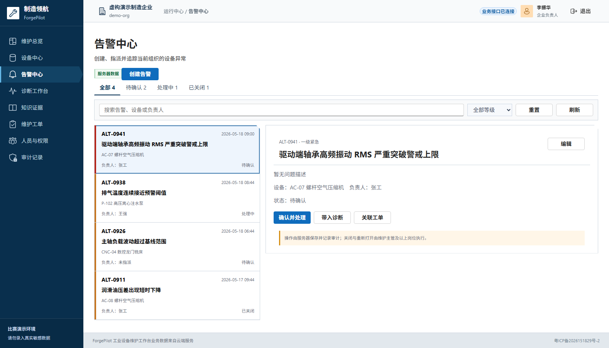
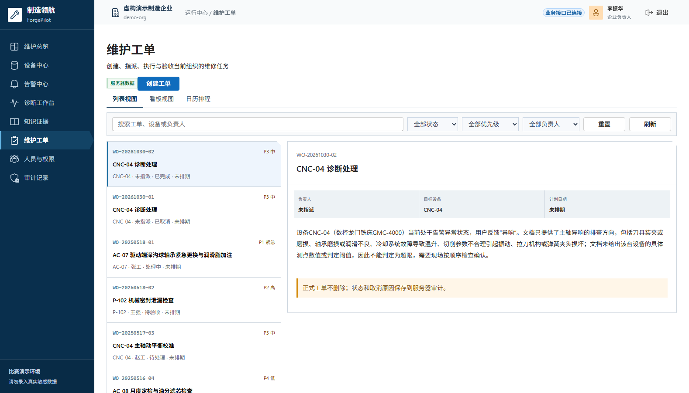
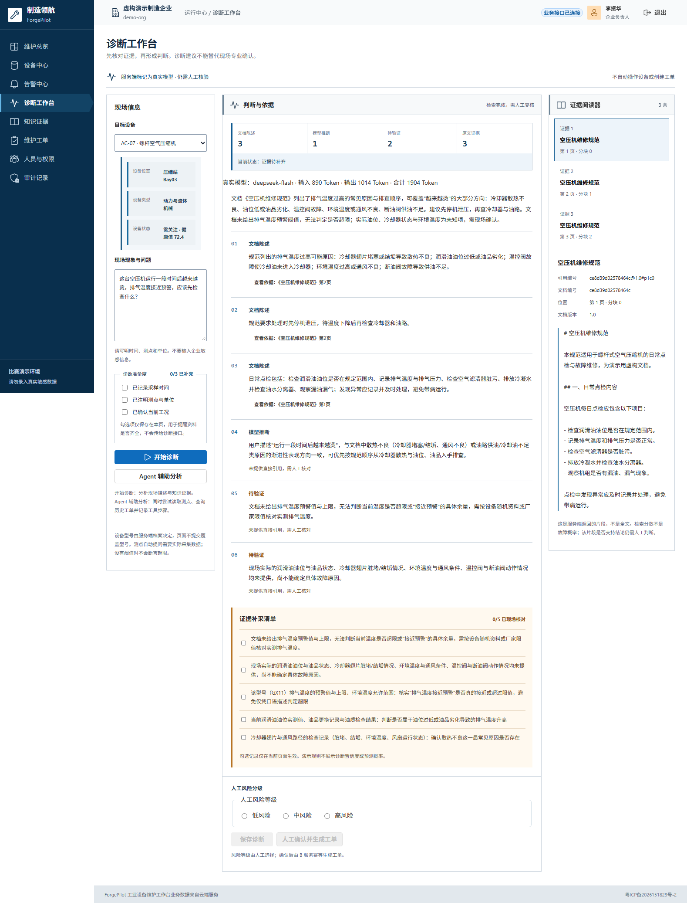
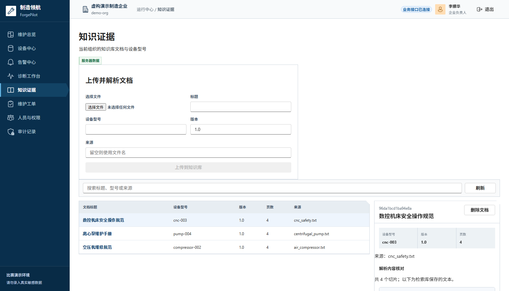
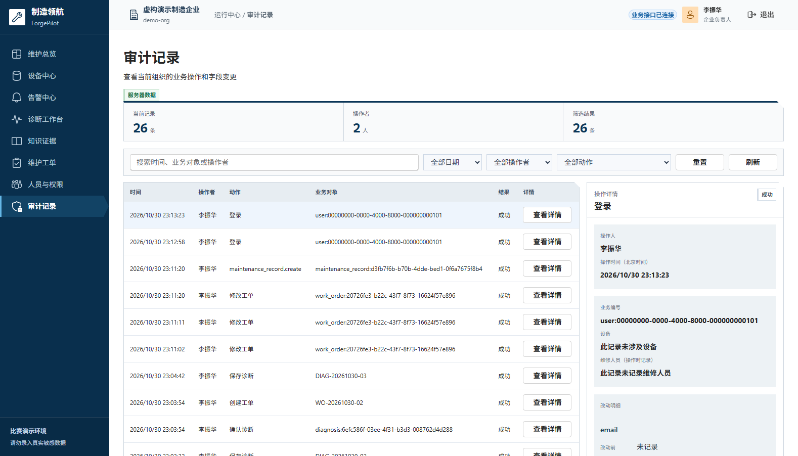

ForgePilot 把制造企业设备维护中分散的“设备档案、说明书知识、现场现象、维修任务、操作记录”收敛到一个 Web 工作台，用检索增强生成（RAG）与真实大模型给出**有证据、可核对、需人工确认**的诊断建议，再把建议转化为可跟踪的维修工单和审计记录。
RAGDeepSeek证据引用结构化输出Human-in-the-loopFastAPIReactCloudBase
| 服务 | 职责 | 不负责 |
|---|---|---|
| 前端 | 页面、交互、权限导航、证据阅读、调用两个 API | 不持有模型密钥，不伪造接口数据 |
| 业务服务 | 身份与组织、设备事实、告警/工单状态机、诊断落库、审计 | 不调用大模型 |
| 知识服务 | 文档解析检索、模型调用、引用校验、结构化诊断、只读 Agent | 不直接建单，不操作设备 |
mock | api 两种数据模式；API 模式请求失败会明确报错，不回退成演示数据。| 对象 | 关键字段 | 说明 |
|---|---|---|
| Organization / Membership | id、code、role | 组织隔离；角色 owner / admin / manager / technician / viewer |
| Device | device_id、model、plant、health、status | 首条演示设备 AC-07 |
| DeviceParameter | name、value、unit、threshold | 设备专属测点，不同设备指标不同 |
| Alert | code、level、status、owner | 待确认 → 处理中 → 已关闭 |
| WorkOrder | code、status、priority、owner、plan | 列表 / 看板 / 日历；合法状态流转 |
| Diagnosis | status、risk、model、tokens、sources | 只有非模拟且证据校验通过才允许保存 |
| AuditLog | actor、action、entity、before/after | 诊断、建单、确认、人员变更均可追溯 |
人工确认生成工单时，以诊断 ID 作为幂等键；重复确认返回同一张工单。保存诊断、确认、建单在同一事务边界内完成，失败整体回滚，避免“诊断已保存但工单只建了一半”。
设备维护是强证据场景。模型参数里的“常识”不能替代本厂说明书。ForgePilot 先检索与当前设备型号匹配的说明书片段，把原文和来源一并交给模型，要求它只基于给定证据回答；检索不到足够证据时直接返回“证据不足”，而不是编一个答案。
status=degraded，前端不允许保存为正式诊断。model_mismatch），避免 AC-07 查到 CNC 手册。| 字段 | 含义 | 页面呈现 |
|---|---|---|
| statements.fact | 文档直接支持的内容 | 文档陈述 |
| statements.inference | 模型基于证据的推断 | 模型推断 |
| statements.pending | 仍需现场确认的内容 | 待验证项 |
| conflicts | 资料之间或资料与现场描述冲突 | 冲突提示 |
| verificationSuggestions | 建议补采的测点/工况 | 证据补采清单 |
| model / tokens | 模型名与输入/输出/合计 Token | 结果顶部与诊断记录 |
POST /api/v1/agent/assist 执行固定白名单工具：设备查询 → 同设备历史工单 → 证据诊断。每一步返回状态（ok / unavailable）和数量，前端逐步展示；工具名、状态、数量写入业务服务审计，不发送提问原文或模型回答。Agent 不修改设备、不创建工单，也不能绕过人工确认。
诊断响应返回模型 provider、model、输入/输出/合计 Token；诊断保存时记录模型来源，便于在工单与审计中回溯“这条建议由哪个模型、消耗多少 Token 生成”。
{
"status": "ok",
"is_mock": false,
"model": "deepseek-flash",
"input_tokens": 890,
"output_tokens": 1014,
"total_tokens": 1904,
"sources": [ ... 3 条证据 ... ],
"statements": [fact, inference, pending]
}

总览按当前组织实时聚合；不同设备使用不同指标，切换设备后测点、趋势、告警和资料摘要同步更新。设备导入支持 CSV 模板与扫码内容录入，扫描依赖浏览器 BarcodeDetector，同时提供手动粘贴。


告警区分待确认、处理中、已关闭；工单支持设备与负责人指派、优先级、计划时间、步骤勾选、提交验收、退回、完成和取消。草稿可删除，正式工单取消保留痕迹。

截图为线上演示环境实拍，模型信息、Token 用量和证据数量均来自真实接口响应。


所有请求集中在 frontend/src/services/api.js：统一注入 Bearer Token、组织标识、错误码映射与超时；mock 与 api 两种模式共用页面组件，避免两套 UI。API 模式失败只提示错误，不回退演示数据。
业务服务用随机 AUTH_SECRET 签发 Token，解析后得到组织、用户、角色；知识服务通过 C_IDENTITY_API_BASE_URL 回查 /api/v1/auth/me，逐请求透传身份。生产环境缺少身份服务配置时拒绝启动，避免“裸奔”。
只有 is_mock=false 且证据校验通过、状态为 ok 的诊断才允许保存；确认接口以诊断 ID 幂等，重复请求返回同一工单；建单与诊断状态更新在同一事务内，异常回滚。
| 层 | 实现 | 说明 |
|---|---|---|
| 前端 | CloudBase 静态托管 + 自定义域名 | Vite 构建为 api 模式，API 地址只含公开地址 |
| 业务 | CloudBase 云托管 forgepilot-business | 容器启动自动种子数据；min=1 常驻 |
| 知识 | CloudBase 云托管 forgepilot-knowledge | 演示说明书随镜像打包；DeepSeek 密钥仅服务端环境变量 |
| 域名 | forgepilot.xiaotianworks.cn | HTTPS + ICP 备案号页脚 |
main 上均为通过状态。| 指标 | 结果 | 说明 |
|---|---|---|
| 检索命中 | 16 / 16 | 问题能命中对应设备说明书片段 |
| 引用准确 | 16 / 16 | 回答引用均可在检索结果中找到 |
| 无答案识别 | 4 / 4 | 证据不足时明确返回 no_answer |
线上演示使用 deepseek-flash 完成 AC-07 诊断：返回 3 条证据、1,904 Token，页面显示模型名与用量；诊断保存、人工确认、幂等建单和审计查询均在同一环境实测通过。
.env.example；模型密钥、数据库口令、登录令牌不进入 Git。站点已完成 ICP 备案并在页脚展示备案号；公安联网备案按流程办理。演示页明确标注“虚构演示数据 / 请勿录入真实敏感信息”。
ForgePilot 不追求“让 AI 替人修设备”，而是让维护人员在每一步都能看到依据、做出判断、留下记录。对一个面向中小制造企业的作品来说，可信、可追溯、可落地，比模型参数更重要。
| 项目 | 值 |
|---|---|
| 地址 | https://forgepilot.xiaotianworks.cn/ |
| 账号 | demo@example.com |
| 密码 | ForgePilot123! |
| 组织代码 | 选填，留空 |
| 能力 | 真实登录、真实 DeepSeek 诊断、保存诊断、人工确认生成工单、审计查询 |
# Windows（Python 3.10+ / Node.js 20+ / PowerShell 7.4+） .\scripts\quickstart.ps1 # 打开 http://127.0.0.1:5180/forgepilot/ # 使用真实 DeepSeek $env:DEEPSEEK_API_KEY = "..." .\scripts\start-demo.ps1 -DeepSeek
frontend/ React + Vite + Fluent UI services/business/ FastAPI 业务服务（登录、设备、告警、工单、审计） services/knowledge/ FastAPI 知识服务（解析、检索、诊断、Agent） docs/ 部署、数据库、截图与技术说明 scripts/ 本地启动、数据库准备、部署检查